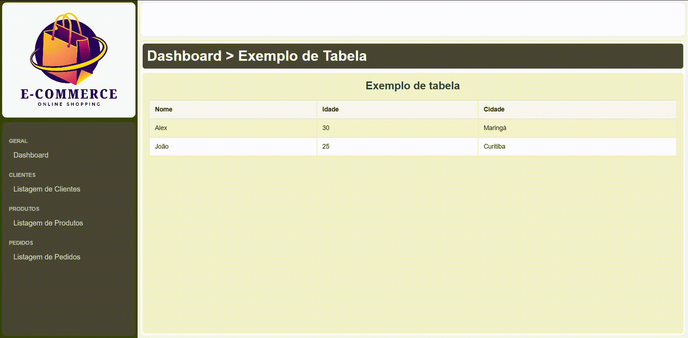

UNICESUMAR - ADS3SNA - 2026 - Programação para front-end - 2º Trabalho 1º BI (valor 2,0)
Link para entrega: https://forms.gle/53zFSSPopqZWWodN7
Data final: 15/04/2026
Formatos aceitos: .html, .css, .zip
Arquivos do projeto: download
Valor: 2,0
Instruções
Desenvolva as telas de Listagem de Clientes, Produtos e Pedidos para o projeto do Dashboard.
O projeto pode ser baixado em https://stackblitz.com/edit/unicesumar-trabalho-2-1-bimestre ou diretamente em .zip clicando aqui.
Especificações
- Será necessário adicionar três arquivos html com o mesmo template:
cliente-lista.html,produto-lista.htmlepedido-lista.html. Todos devem seguir o mesmo leiaute doindex.html. - Para cada um dos links, deve ser adicionado uma página, copiando seu leiaute, porém alterando seu conteúdo para tabelas de listagem de dados.
- Cada página de listagem (Listagem de Clientes, Listagem de Produtos e Listagem de Pedidos) deve conter uma tabela (
) com a formatação desejada;
- Os dados adicionados serão fictícios, devendo ter 10 linhas para cada listagem.
- Além disso, será necessário ligar os os links
<a>a cada uma das páginas criadas.Por isso, faça:
Em cada arquivo, colocar 10 registros de cada um dos itens a seguir:
Listagem de Clientes - Campos:
- Id
- Nome
- Sobrenome
- CPF
- Telefone
- Endereço
Listagem de Produtos - Campos:
- Id
- Descrição
- Código de Barras
- Estoque
- Valor
Listagem de Pedido - Campos:
- Id
- Cliente
- Data da Movimentação
- Valor Total
Resultado esperado
Ao final do trabalho, espera-se o seguinte resultado:

Entrega
O trabalho deve ser entregue pelo formulário https://forms.gle/53zFSSPopqZWWodN7 até o dia 15/04/2026. Não serão aceitas entregas após a data. Siga as instruções do formulário:
- Anexe os arquivos criados em em formato .zip.
- Obs.: Você pode compactar os arquivos em .zip utilizando o Winrar ou 7-Zip. Não inclua senha no arquivo.